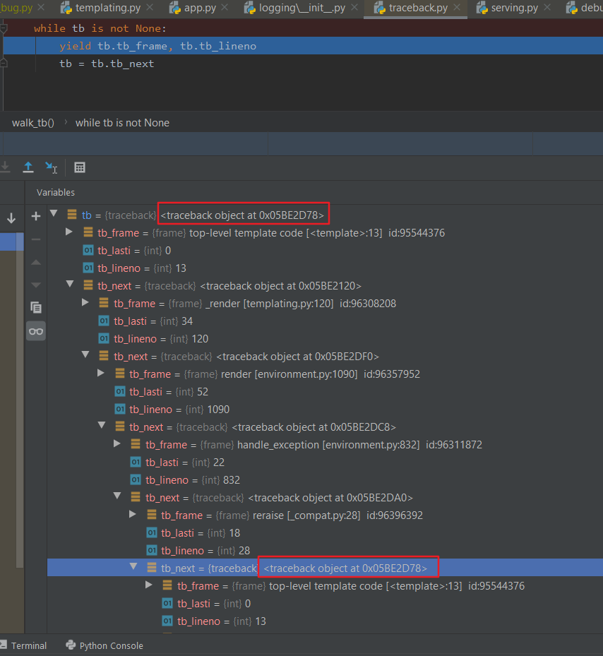

Flask (Werkzeug) Templating Caused Trackback Loop Reference Issue
Today, I was facing an issue when using Flask template.
If use an dash “-“ linked variable name in Flask template, it will cause Flask to hang without
throwing any exception.
At beginning, I guess it may be an issue of Jinja template rending. But after traced in IDE
(Pycharm community 2019.3), I saw that templating raised the exception and Werkzeug is handling.
At first I uses Flask debug mode and IDE debug run to step into codes to dig it. IDE gets
slower and slower and the debugger hung in Werkzerg codes.
Eventually, I found an endless loop in Python\Lib\traceback.py to walk trackback stacks. The
trackbacks are stored in a link which nodes point to next. In flask\templating.py,flask\app.py and werkzeug\debug\tbtools.py, the exception was catched. Inhandle_exception() of flask\app.py, Werkzeug wants to log it and print it out.
The trackback link has looped reference as below picture.

Simple code to re-produce it as below (“font-size” variable caused.).
1 | import sys |
Raised Github issue at Flask:
Environment:
- Window 10
- Python 3.6.8150.1013 (venv)
- Flask 1.1.1
- Werkzeug 0.16.1
Possible related Python issue:
- Issue9427 - logging.error(‘…’, exc_info=True) should display upper frames, too
- Issue1553375 - Add traceback.print_full_exception()
– END –